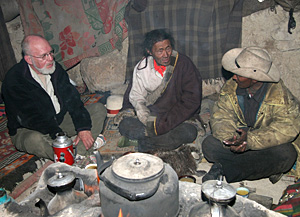

Melvyn C. Goldstein, Editor-in-Chief
Linda Cantara and Ke Liao, Technical Editors
Tsewang Namgyal Shelling, Tibetan Editor
For information, please contact:
Melvyn C. Goldstein
John Reynolds Harkness Professor in Anthropology
Co-Director, Center for Research on Tibet
Case Western Reserve University
Cleveland, Ohio 44106
Ph. 216 368-2265, Fx. 216 368-5334
Center for Research on Tibet: http://www.cwru.edu/affil/tibet/